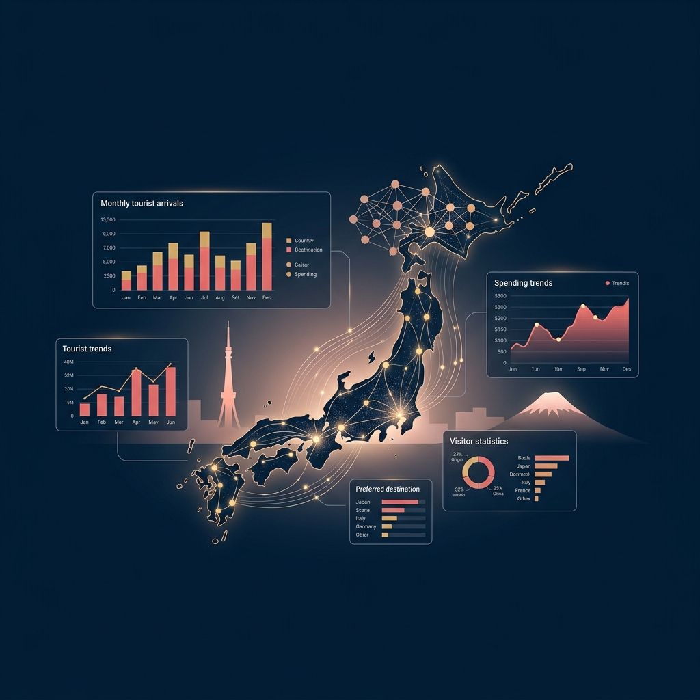

人が数日かけて行う「調査→分析→発信」のワークフローを、エンジニアリングで完全自動化します。
PythonスクリプトがJTA（観光庁）とJNTOの統計ページを定期監視。「訪日外客数」「消費動向」などのキーワードを含む最新PDFを自動検出・ダウンロードし、PyMuPDFで数値データを構造化テキストに変換します。
# 実行例
$ python inbound_data_collector.py
Monitoring JTA...
✓ Found 3 new PDFs
✓ Extracted 12,400 chars
→ Sending to LLM...
抽出した数値データをLLM（GPT-4o等）に送信。「資深日本商業観察家」のロールで、300字速報・商業洞察・インフォグラフィック用JSONの3点セットを自動生成。日経ビジネスレベルの日本語品質を担保します。
[出力サンプル]
タイトル:
「消費額9.6兆円の衝撃—訪日客が変えた日本小売業の構造」
データJSON:
{"visitors":41.4M, "spend":9.6T...}
Phase 2のJSONデータを元に、3種類のビジュアルアセットを自動生成。封面图（カバー）、インフォグラフィック長尺図、X/LinkedIn向けSNSカードを一括出力。深蓝×金黄のB2B配色で権威感を演出します。
生成アセット
コピー＆ペーストですぐ使える、実戦投入済みのプロンプト集。
JTA・JNTOのPDFを自動検出・DLし、PyMuPDFでテキスト抽出。history.jsonで重複管理。エラーハンドリング＆ログ付き完全版Pythonスクリプト生成プロンプト。
詳細を見る →生の統計テキストを速報・深度分析・Infographic JSONに変換。「訪日ラボ+日経商業」風の本格日本語コンテンツを生成するB2Bメディア編集者プロンプト。
詳細を見る →JSONデータからカバー図・Infographic・SNSカードの3点セットを生成する画像AIプロンプト。深蓝×金黄の権威あるB2B配色でブランド統一感を担保。
詳細を見る →